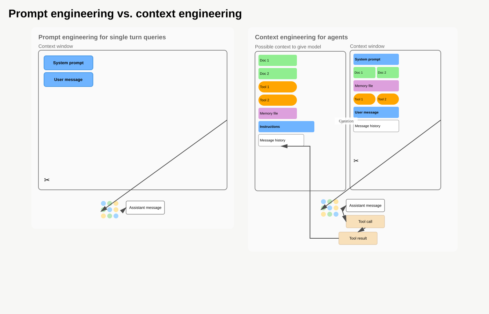
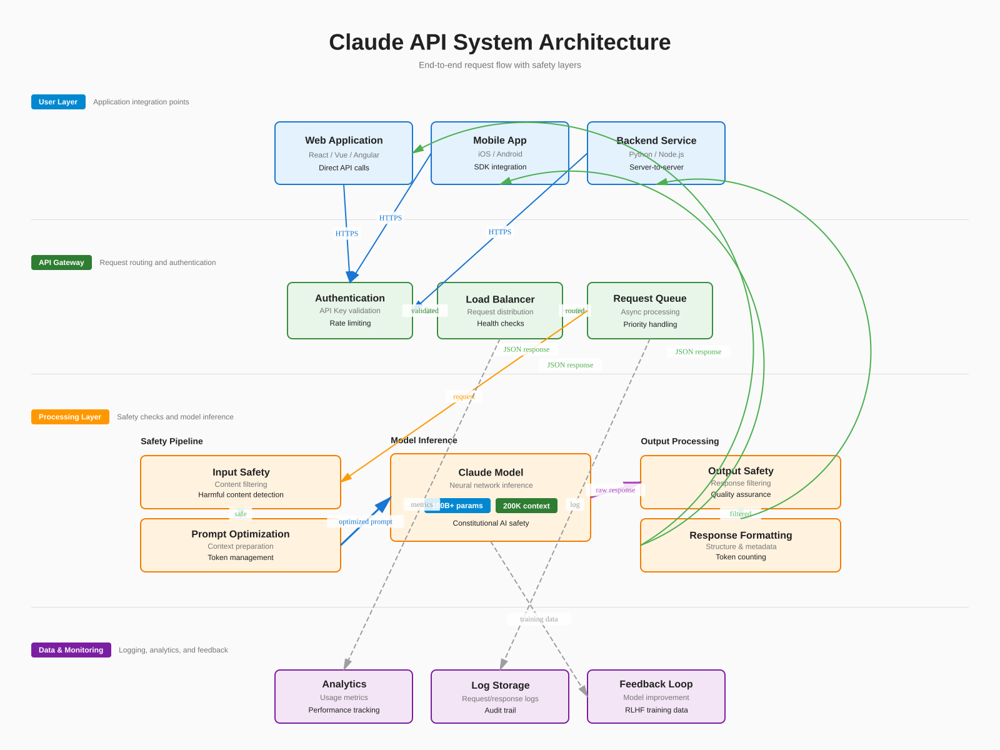
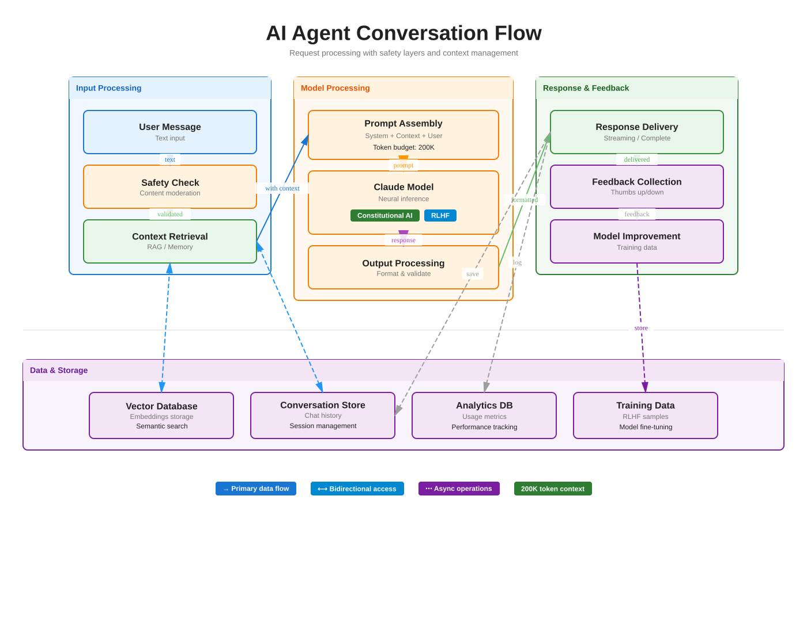

Diagram DSL - Anthropic-Style Examples
Professional AI system architecture diagrams created with diagram-dsl
🎯 Original Anthropic Diagram - "Prompt engineering vs. context engineering"
This is the specific diagram from Anthropic's documentation:
- ✅ Two-panel comparison layout
- ✅ Nested boxes with dashed borders (context windows)
- ✅ Multiple element types (speech bubbles, docs, tools, memory)
- ✅ Neural network grid (3×3 colored circles)
- ✅ Custom arrow routing with specific attachment points
- ✅ Arrow with label ("Curation")
- ✅ Y-shaped arrow fork (model → outputs)
- ✅ Feedback loop (tool result → message history)
- ✅ Arrow shortening (stops before reaching target)
New Arrow Features: fromSide, toSide, fromOffset, toOffset, shortenEnd
See examples/anthropic-original-replication.tsx and ARROW_ENHANCEMENTS.md

1. Simple AI Conversation (Perfect Starting Point)
Perfect template for your own diagrams:
- ✅ Three-column layout (Input → Processing → Output)
- ✅ Color-coded Cluster components for visual grouping
- ✅ Professional Card components with clear hierarchy
- ✅ Solid arrows for main flow, dashed for data access
- ✅ Shared data layer at the bottom
- ✅ Legend for arrow types
Copy examples/anthropic-simple.tsx as a starting point!

2. Anthropic-Style AI System Architecture (Full-Featured)
This diagram demonstrates:
- ✅ Clear layer separation (User, Gateway, Processing, Data)
- ✅ Professional card-based components with multiple text layers
- ✅ Color-coded arrows showing data flow
- ✅ Badges for metadata and status information
- ✅ Clean typography hierarchy
- ✅ Visual dividers between sections

3. AI Agent Conversation Flow with Clusters
Key improvements over the first version:
- ✅ Cluster components for clear visual grouping
- ✅ Three-column layout for logical flow separation
- ✅ Color-coded clusters by function (Input, Processing, Response)
- ✅ Separate data layer with shared storage components
- ✅ Bidirectional arrows for data access patterns
- ✅ Cleaner, more scannable layout
This demonstrates how Cluster components make complex diagrams much easier to create!

4. Complete Agent System with Context Management
Features demonstrated:
- ✅ Agent state machine (idle → processing → done)
- ✅ Query processing with decision logic
- ✅ 3-tier memory hierarchy (hot cache, vector DB, conversation history)
- ✅ Context window token allocation
- ✅ Complete data flow from user input to LLM output
- ✅ Enhanced arrows (thick, dashed, curved, bidirectional)